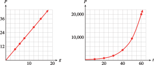

Section 5.4 Direct Variation
Two types of functions are widely used in modeling and are known by special names: direct variation and inverse variation.
Subsection 5.4.1 Proportion and Variation
Two variables are directly proportional (or just proportional) if the ratios of their corresponding values are always equal. Consider the functions described in the tables below. The first table shows the price of gasoline as a function of the number of gallons purchased.
| Gallons of gasoline |
Total price |
Price/ Gallons |
| \(4\) | \(\$9.60\) | \(\dfrac{9.60}{4}=2.40\) |
| \(6\) | \(\$14.40\) | \(\dfrac{14.40}{6}=2.40\) |
| \(8\) | \(\$19.20\) | \(\dfrac{19.20}{8}=2.40\) |
| \(12\) | \(\$28.80\) | \(\dfrac{28.80}{12}=2.40\) |
| \(15\) | \(\$36.00\) | \(\dfrac{36.00}{15}=2.40\) |
| Years | Population | People/Years |
| \(10\) | \(432\) | \(\dfrac{432}{10}\approx 43\) |
| \(20\) | \(932\) | \(\dfrac{932}{20}\approx 47\) |
| \(30\) | \(2013\) | \(\dfrac{2013}{30}\approx 67\) |
| \(40\) | \(4345\) | \(\dfrac{4345}{40}\approx 109\) |
| \(50\) | \(9380\) | \(\dfrac{9380}{50}\approx 188\) |
| \(60\) | \(20,251\) | \(\dfrac{20,251}{60}\approx 338\) |
The ratio \(\dfrac{\text{total price}}{\text{number of gallons}}\text{,}\) or price per gallon, is the same for each pair of values in the first table. This agrees with everyday experience: The price per gallon of gasoline is the same no matter how many gallons you buy. Thus, the total price of a gasoline purchase is directly proportional to the number of gallons purchased.
The second table shows the population of a small town as a function of the town’s age. The ratio \(\dfrac{\text{number of people}}{\text{number of years}}\) gives the average rate of growth of the population in people per year. You can see that this ratio is not constant; in fact, it increases as time goes on. Thus, the population of the town is not proportional to its age.
When does a table represent proportional variables?
- If it has a constant slope
- If it includes the point \((0,0)\)
- If the ratio output/input is constant
- If each output is double the previous one
The graphs of the two functions described above by tables (the gasoline price and the small town population tables) are shown below.

We see that the price, \(P\text{,}\) of a fill-up is a linear function of the number of gallons, \(g\text{,}\) purchased. This should not be surprising if we write an equation relating the variables \(g\) and \(P\text{.}\) Because the ratio of their values is constant, we can write
\begin{equation*}
\frac{P}{g}= k
\end{equation*}
where \(k\) is a constant. In this example, the constant \(k\) is \(2.40\text{,}\) the price of gasoline per gallon. Solving for \(P\) in terms of \(g\text{,}\) we have
\begin{equation*}
P = kg = 2.40g
\end{equation*}
which we recognize as the equation of a line through the origin.
In general, we make the following definition.
Direct Variation.
\(y\) varies directly with \(x\) if
\begin{equation*}
y = kx
\end{equation*}
where \(k\) is a positive constant called the constant of variation.
Thus, if \(y\) varies directly with \(x\text{,}\) it means that \(y\) is directly proportional to \(x\text{.}\) The two phrases mean the same thing.
Example 5.4.2.
- The circumference, \(C\text{,}\) of a circle varies directly with its radius, \(r\text{,}\) because\begin{equation*} C = 2\pi r \end{equation*}The constant of variation is \(2\pi\text{,}\) or about 6.28.
- The amount of interest, \(I\text{,}\) earned in one year on an account paying 7% simple interest, varies directly with the principal, \(P\text{,}\) invested, because\begin{equation*} I = 0.07P \end{equation*}
From the definition above, we see that direct variation defines a linear function of the form
\begin{equation*}
y = f (x) = kx
\end{equation*}
Compared to the standard form for a linear function, \(y = b + mx\text{,}\) the constant term, \(b\text{,}\) is zero, so the graph of a direct variation passes through the origin. The positive constant \(k\) in the equation \(y = kx\) is just the slope of the graph, so it tells us how rapidly the graph increases.
Checkpoint 5.4.3. Practice 1.

Which of the graphs above could represent direct variation? Explain why.
- (a). The graph is a straight line that increases.
- (b). The graph is a straight line through the origin.
- (c). The graph is a straight line that decreases.
- None of the above
Solution.
(b): The graph is a straight line through the origin.
Checkpoint 5.4.4. QuickCheck 2.
- A table describes direct variation if the ratio of corresponding entries is .
- A graph describes direct variation if it is a .
- An equation describes direct variation if it has the form .
- If two variables vary directly, we may also say that they are .
Subsection 5.4.2 The Scaling Property of Direct Variation
Because the graph of \(y=kx\) passes through the origin, direct variation has the following scaling property: if we double the value of \(x\text{,}\) then the value of \(y\) will double also. In fact, increasing \(x\) by any factor causes \(y\) to increase by the same factor. Look again at the table for the price of buying gasoline. Doubling the number of gallons of gas purchased, say, from \(4\) gallons to \(8\) gallons or from \(6\) gallons to \(12\) gallons, causes the total price to double also.
Checkpoint 5.4.5. QuickCheck 3.
You invest $800 for one year at 7% simple interest. The interest earned is
\begin{equation*}
I=0.07(800)= \fillinmath{XXXXXXXXXX}
\end{equation*}
If you increase the investment by a factor of, say, 1.6, to 1.6(800) or $1280, the interest will be
\begin{equation*}
I=0.07(1280)=\fillinmath{XXXXXXXXXX}
\end{equation*}
The original interest is increased by a factor of .
Solution.
$56; $89.60; 1.6
Example 5.4.6.
- Tuition at Woodrow University is $400 plus $30 per unit. Is the tuition proportional to the number of units you take?
- Imogen makes a 15% commission on her sales of environmentally friendly products marketed by her co-op. Do her earnings vary directly with her sales?
Solution.
-
Let \(u\) represent the number of units you take, and let \(T(u)\) represent your tuition. Then\begin{equation*} T(u) = 400 + 30u \end{equation*}Thus, \(T(u)\) is a linear function of \(u\text{,}\) but the \(T\)-intercept is \(400\text{,}\) not \(0\text{.}\) Your tuition is not proportional to the number of units you take, so this is not an example of direct variation. You can check that doubling the number of units does not double the tuition. For example,\begin{equation*} T(6) = 400 + 30(6) = 580 \end{equation*}and\begin{equation*} T(12) = 400 + 30(12) = 760 \end{equation*}Tuition for \(12\) units is not double the tuition for \(6\) units. The graph of \(T(u)\) in figure (a) does not pass through the origin.

- Let \(S\) represent Imogen’s sales, and let \(C(S)\) represent her commission. Then\begin{equation*} C(S) = 0.15S \end{equation*}Thus, \(C(S)\) is a linear function of \(S\) with a \(C\)-intercept of zero, so Imogen’s earnings do vary directly with her sales.
Checkpoint 5.4.7. Practice 2.
Which table could represent direct variation? Explain why. (Hint: What happens to \(y\) if you multiply \(x\) by a constant?)
\(x\) \(1\) \(2\) \(3\) \(6\) \(8\) \(9\) \(y\) \(2.5\) \(5\) \(7.5\) \(15\) \(20\) \(22.5\) \(x\) \(2\) \(3\) \(4\) \(6\) \(8\) \(9\) \(y\) \(2\) \(3.5\) \(5\) \(7\) \(8.5\) \(10\)
Solution.
(a): If we multiply \(x\) by a constant, \(y\) is also multiplied by the same constant.
Subsection 5.4.3 Finding a Formula for Direct Variation
If we know any one pair of values for the variables in a direct variation, we can find the constant of variation. Then we can use the constant to write a formula for one of the variables as a function of the other.
Example 5.4.8.
If you kick a rock off the rim of the Grand Canyon, its speed, \(v\text{,}\) varies directly with the time, \(t\text{,}\) it has been falling. The rock is falling at a speed of 39.2 meters per second when it passes a lizard on a ledge 4 seconds later.
- Express \(v\) as a function of \(t\text{.}\)
- What is the speed of the rock after it has fallen for 6 seconds?
- Sketch a graph of \(v(t)\) versus \(t\text{.}\)
Solution.
- Because \(v\) varies directly with \(t\text{,}\) there is a positive constant \(k\) for which\begin{equation*} v = kt\text{.} \end{equation*}We substitute \(v = \alert{39.2}\) and \(t = \alert{4}\) and solve for \(k\) to find\begin{align*} 39.2 \amp = k(4)\amp\amp \blert{\text{Divide both sides by 4.}}\\ k \amp = 9.8 \end{align*}Replacing \(k\) by \(9.8\text{,}\) we find the formula \(v (t) = 9.8 t\text{.}\)
- We evaluate the function found in part (a) for \(t = 6\text{.}\)\begin{equation*} v = 9.8(\alert{6}) = 58.8 \end{equation*}At \(t = 6\) seconds, the rock is falling at a speed of 58.8 meters per second.
-
You can use your calculator to graph the function \(v = 9.8t\text{.}\) The graph is shown below.

Checkpoint 5.4.9. Practice 3.
The volume of a bag of rice, in cups, is directly proportional to the weight of the bag. A 2-pound bag contains 3.5 cups of rice.
- Express the volume, \(V\text{,}\) of a bag of rice as a function of its weight, \(w\text{.}\)
- How many cups of rice are in a \(15\)-pound bag?
Solution.
- \(\displaystyle V=1.75w\)
- \(26.25\) cups
Checkpoint 5.4.10. QuickCheck 3.
How can you find the value of the constant of variation?
- Double the value of \(x\)
- Find the \(y\)-intercept of the graph
- Substitute a pair of related values into \(y=kx\)
- All of the above
Subsection 5.4.4 Direct Variation with a Power of \(x\)
In many situations, \(y\) is proportional to a power of \(x\text{,}\) instead of \(x\) itself.
Direct Variation with a Power.
\(y\) varies directly with a power of \(x\) if
\begin{equation*}
y = kx^n
\end{equation*}
where \(k\) and \(n\) are positive constants.
Example 5.4.11.
The surface area of a sphere varies directly with the square of its radius. A balloon of radius 5 centimeters has surface area \(100\pi\) square centimeters, or about 314 square centimeters. Find a formula for the surface area of a sphere as a function of its radius.
Solution.
If \(S\) stands for the surface area of a sphere of radius \(r\text{,}\) then
\begin{equation*}
S = f (r ) = kr^2
\end{equation*}
To find the constant of variation, \(k\text{,}\) we substitute the values of \(S\) and \(r\text{.}\)
\begin{align*}
\alert{100\pi} \amp = k(\alert{5})^2\\
4\pi \amp= k
\end{align*}
Thus, \(S = f (r ) = 4\pi r^2\text{.}\)
Checkpoint 5.4.12. Practice 4.
The volume of a sphere varies directly with the cube of its radius. A balloon of radius 5 centimeters has volume \(\dfrac{500\pi}{3}\) cubic centimeters, or about 524 cubic centimeters. Find a formula for the volume, \(V\text{,}\) of a sphere as a function of its radius, \(r\text{.}\)
Solution.
\(V=\dfrac{4}{3}\pi r^3\)
In any example of direct variation, as the input variable increases through positive values, the output variable increases also. Thus, a direct variation is an increasing function, as we can see when we consider the graphs of some typical direct variations shown below.

Caution 5.4.13.
The graph of a direct variation always passes through the origin, so when the input is zero, the output is also zero. Thus, the functions \(~y = 3x + 2~\) and \(~y = 0.4x^2 - 2.3~\text{,}\) for example, are not direct variation, even though they are increasing functions for positive \(x\text{.}\)
Checkpoint 5.4.14. QuickCheck 4.
True or False.
- Every increasing function is a direct variation.
- Every direct variation is an increasing function.
- The graph of every direct variation is a straight line.
- The graph of every direct variation passes through the origin.
Even without an equation, we can check whether a table of data describes direct variation or merely an increasing function. If \(y\) varies directly with \(x^n\text{,}\) then \(~y = kx^n~\text{,}\) or, equivalently,\(~\dfrac{y}{x^n} = k.~\)
Test for Direct Variation.
If the ratio \(~\dfrac{y}{x^n}~\) is constant, then \(y\) varies directly with \(x^n\text{.}\)
Example 5.4.15.
Delbert collects the following data and would like to know if \(y\) varies directly with the square of \(x\text{.}\) What should he calculate?
| \(x\) | \(2\) | \(5\) | \(8\) | \(10\) | \(12\) |
| \(y\) | \(6\) | \(16.5\) | \(36\) | \(54\) | \(76\) |
Solution.
If \(y\) varies directly with \(x^2\text{,}\) then \(y = kx^2\text{,}\) or \(\dfrac{y}{x^2}= k\text{.}\) Delbert should calculate the ratio \(\dfrac{y}{x^2}\) for each data point.
| \(x\) | \(2\) | \(5\) | \(8\) | \(10\) | \(12\) |
| \(y\) | \(6\) | \(16.5\) | \(36\) | \(54\) | \(76\) |
| \(\dfrac{y}{x^2}\) | \(1.5\) | \(0.66\) | \(0.56\) | \(0.54\) | \(0.53\) |
Because the ratio \(\dfrac{y}{x^2}\) is not constant, \(y\) does not vary directly with \(x^2\text{.}\)
Subsection 5.4.5 Scaling
If \(y\) varies directly with \(x\text{,}\) then doubling \(x\) causes \(y\) to double also. But what if \(y\) varies directly with a power of \(x\) :
- Is the area of a \(16\)-inch circular pizza double the area of an \(8\)-inch pizza?
- If you double the dimensions of a model of a skyscraper, will its weight double also?
You probably know that the answer to both of these questions is No. The area of a circle is proportional to the square of its radius, and the volume (and hence the weight) of an object is proportional to the cube of its linear dimension. Variation with a power of \(x\) produces a different scaling effect.
Example 5.4.16.
The Taipei 101 building is 1671 feet tall, and in 2006 it was the tallest skyscraper in the world. Show that doubling the dimensions of a model of the Taipei 101 building produces a model that weighs 8 times as much.
Solution.
The Taipei 101 skyscraper is approximately box shaped, so its volume is given by the product of its linear dimensions, \(V = lwh\text{.}\) The weight of an object is proportional to its volume, so the weight, \(W\text{,}\) of the model is
\begin{equation*}
W = klwh
\end{equation*}
where the constant \(k\) depends on the material of the model. If we double the length, width, and height of the model, then
\begin{align*}
W_\text{new} \amp = k(2l)(2w)(2h)\\
\amp = 2^3(klwh) = 8W_\text{old}
\end{align*}
The weight of the new model is \(2^3 = 8\) times the weight of the original model.
Checkpoint 5.4.17. Practice 6.
Use the formula for the area of a circle to show that doubling the diameter of a pizza quadruples its area.
Step 1: The formula for the area of a circle of radius \(r\) is \(A=\fillinmath{XXXXXX}\)
Step 2: If we double the diameter, the new radius is \(\fillinmath{XXXXXX}\)
Step 3: Substitute the new expression for the radius into the area formula to get the area of the new circle.
Solution.
\(A= \pi r^2\)
The new radius is \(2r\text{.}\)
The new area is \(\pi (2r)^2 = 4 \pi r^2 = 4A\)
In general, if \(y\) varies directly with a power of \(x\text{,}\) that is, if \(y = kx^n\text{,}\) then doubling the value of \(x\) causes \(y\) to increase by a factor of \(2^n\text{.}\) In fact, if we multiply \(x\) by any positive number \(c\text{,}\) then
\begin{align*}
y_\text{new} \amp =k(cx)^n\\
\amp =c^n(kx^n) = c^n(y_\text{old})
\end{align*}
so the value of \(y\) is multiplied by \(c^n\text{.}\)
We will call \(n\) the scaling exponent, and you will often see variation described in terms of scaling. For example, we might say that "the area of a circle scales as the square of its radius." (In many applications, the power \(n\) is called the scale factor, even though it is not a factor but an exponent.)
Exercises 5.4.6 Problem Set 5.4
Warm Up
1.
Solve
- \(\displaystyle \dfrac{a}{a-2}=\dfrac{25}{30}\)
- \(\displaystyle \dfrac{7}{90}=\dfrac{126}{5(t-2)^2}\)
2.
Sketch a graph in the first quadrant.
-
\(\displaystyle f(x)=2x\)
\(x\) \(0\) \(\dfrac{1}{2}\) \(1\) \(2\) \(f(x)\) \(\hphantom{\qquad}\) \(\hphantom{\qquad}\) \(\hphantom{\qquad}\) \(\hphantom{\qquad}\) -
\(\displaystyle g(x)=2x^2\)
\(x\) \(0\) \(\dfrac{1}{2}\) \(1\) \(2\) \(g(x)\) \(\hphantom{\qquad}\) \(\hphantom{\qquad}\) \(\hphantom{\qquad}\) \(\hphantom{\qquad}\) -
\(\displaystyle h(x)=\dfrac{2}{x}\)
\(x\) \(0\) \(\dfrac{1}{2}\) \(1\) \(2\) \(h(x)\) \(\hphantom{\qquad}\) \(\hphantom{\qquad}\) \(\hphantom{\qquad}\) \(\hphantom{\qquad}\)
Skills Practice
Exercise Group.
For Problems 3 and 4,
- Use the values in the table to find the constant of variation, \(k\text{,}\) and write \(y\) as a function of \(x\text{.}\)
- Fill in the rest of the table with the correct values.
- What happens to \(y\) when you double the value of \(x\text{?}\)
3.
\(y\) varies directly with \(x\text{.}\)
| \(x\) | \(2\) | \(5\) | \(\hphantom{\qquad}\) | \(12\) | \(\) |
| \(y\) | \(\hphantom{\qquad}\) | \(1.5\) | \(2.4\) | \(\hphantom{\qquad}\) | \(4.5\) |
4.
\(y\) varies directly with the square of \(x\text{.}\)
| \(x\) | \(3\) | \(6\) | \(\) | \(12\) | \(\) |
| \(y\) | \(\) | \(24\) | \(54\) | \(\) | \(150\) |
Exercise Group.
For Problems 5–8, decide whether
- \(y\) varies directly with \(x\)
- \(y\) varies directly with \(x^2\)
- \(y\) does not vary directly with a power of \(x\)
Explain why your choice is correct. If your choice is (a) or (b), find the constant of variation, \(k\text{.}\)
5.
| \(x\) | \(2\) | \(3\) | \(5\) | \(8\) |
| \(y\) | \(2.0\) | \(4.5\) | \(12.5\) | \(32.0\) |
6.
| \(x\) | \(2\) | \(4\) | \(6\) | \(9\) |
| \(y\) | \(12\) | \(28\) | \(44\) | \(68\) |
7.
| \(x\) | \(1.5\) | \(2.4\) | \(5.5\) | \(8.2\) |
| \(y\) | \(3.0\) | \(7.2\) | \(33\) | \(73.8\) |
8.
| \(x\) | \(1.2\) | \(2.5\) | \(6.4\) | \(12\) |
| \(y\) | \(7.20\) | \(31.25\) | \(204.80\) | \(720.00\) |
Applications
9.
Delbert’s credit card statement lists three purchases he made while on a business trip in the Midwest. His company’s accountant would like to know the sales tax rate on the purchases.
| \(\text{Price of item} \) | \(18\) | \(28\) | \(12\) |
| \(\text{Tax} \) | \(1.17\) | \(1.82\) | \(0.78\) |
| \(\text{Tax}/\text{Price} \) | \(\hphantom{00000}\) | \(\hphantom{00000}\) | \(\hphantom{00000}\) |
- Compute the ratio of the tax to the price of each item. Is the tax proportional to the price? What is the tax rate?
- Express the tax, \(T\text{,}\) as a function of the price, \(p\text{,}\) of the item.
- Sketch a graph of the function by hand, and label the scales on the axes.
10.
At constant acceleration from rest, the distance traveled by a race car is proportional to the square of the time elapsed. The highest recorded road-tested acceleration is 0 to 60 miles per hour in 3.07 seconds, which produces the following data.
| \(\text{Time (seconds)} \) | \(2\) | \(2.5\) | \(3\) |
| \(\text{Distance (feet)} \) | \(57.32\) | \(89.563\) | \(128.97\) |
| \(\text{Distance/Time}^2\) | \(\hphantom{00000}\) | \(\hphantom{00000}\) | \(\hphantom{00000}\) |
- Compute the ratios of the distance traveled to the square of the time elapsed. What was the acceleration, in feet per second squared?
- Express the distance traveled, \(d\text{,}\) as a function of time in seconds, \(t\text{.}\)
- Sketch a graph of the function by hand, and label the scales on the axes.
11.
The weight of an object on the Moon varies directly with its weight on Earth. A person who weighs 150 pounds on Earth would weigh only 24.75 pounds on the Moon.
-
Find a function that gives the weight \(m\) of an object on the Moon in terms of its weight \(w\) on Earth. Complete the table and graph your function in a suitable window.
\(w\) \(50\) \(100\) \(200\) \(400\) \(m\) \(\hphantom{0000}\) \(\hphantom{0000}\) \(\hphantom{0000}\) \(\hphantom{0000}\) - How much would a person weigh on the Moon if she weighs 120 pounds on Earth?
- A piece of rock weighs 50 pounds on the Moon. How much will it weigh back on Earth?
- If you double the weight of an object on Earth, what will happen to its weight on the Moon?
12.
The length of a rectangle is 10 inches, and its width is 8 inches. Suppose we increase the length of the rectangle while holding the width constant.
-
Fill in the table.
Length Width Perimeter Area \(10\) \(8\) \(12\) \(8\) \(15\) \(8\) \(20\) \(8\) - Does the perimeter vary directly with the length?
- Write a formula for the perimeter of the rectangle in terms of its length.
- Does the area vary directly with the length?
- Write a formula for the area of the rectangle in terms of its length.
13.
Hubble’s law says that distant galaxies are receding from us at a rate that varies directly with their distance. (The speeds of the galaxies are measured using a phenomenon called redshifting.) A galaxy in the constellation Ursa Major is 980 million light-years away and is receding at a speed of 15,000 kilometers per second.
-
Find a function that gives the speed, \(v\text{,}\) of a galaxy in terms of its distance, \(d\text{,}\) from Earth. Complete the table and graph your function in a suitable window. (Distances are given in millions of light-years.)
\(d\) \(500\) \(1000\) \(2000\) \(4000\) \(m\) \(\hphantom{0000}\) \(\hphantom{0000}\) \(\hphantom{0000}\) \(\hphantom{0000}\) - How far away is a galaxy in the constellation Hydra that is receding at 61,000 kilometers per second?
- A galaxy in Leo is 1240 million light-years away. How fast is it receding from us?
14.
The length, \(L\text{,}\) of a pendulum varies directly with the square of its period, \(T\text{,}\) the time required for the pendulum to make one complete swing back and forth. The pendulum on a grandfather clock is 3.25 feet long and has a period of 2 seconds.
-
Express \(L\) as a function of \(T\text{.}\) Complete the table and graph your function in a suitable window.
\(T\) \(1\) \(5\) \(10\) \(20\) \(L\) \(\hphantom{0000} \) \(\hphantom{0000} \) \(\hphantom{0000} \) \(\hphantom{0000} \) - How long is the Foucault pendulum in the Pantheon in Paris, which has a period of 17 seconds?
- A hypnotist uses a gold pendant as a pendulum to mesmerize his clients. If the chain on the pendant is 9 inches long, what is the period of its swing?
- In order to double the period of a pendulum, how must you vary its length?
15.
The amount of power, \(P\text{,}\) generated by a windmill varies directly with the cube of the wind speed, \(w\text{.}\) A windmill on Oahu, Hawaii, produces 7300 kilowatts of power when the wind speed is 32 miles per hour.
-
Express the power as a function of wind speed. Complete the table and graph your function in a suitable window.
\(w\) \(10\) \(20\) \(40\) \(80\) \(P\) \(\hphantom{0000} \) \(\hphantom{0000} \) \(\hphantom{0000} \) \(\hphantom{0000} \) - How much power would the windmill produce in a light breeze of 15 miles per hour?
- What wind speed is needed to produce 10,000 kilowatts of power?
- If the wind speed doubles, what happens to the amount of power generated?
Exercise Group.
The functions described by a table or a graph in Problems 16-19 are examples of direct variation.
- Find an algebraic formula for the function, including the constant of variation, \(k\text{.}\)
- Answer the question in the problem.
16.
A wide pipe can handle a greater water flow than a narrow pipe. The graph shows the water flow through a pipe, \(w\text{,}\) as a function of its radius, \(r\text{.}\) How great is the water flow through a pipe of radius of 10 inches?

17.
The faster a car moves, the more difficult it is to stop. The graph shows the distance, \(d\text{,}\) required to stop a car as a function of its velocity, \(v\text{,}\) before the brakes were applied. What distance is needed to stop a car moving at 100 kilometers per hour?

18.
The maximum height attained by a cannonball depends on the speed at which it was shot. The table shows maximum height as a function of initial speed. What height is attained by a cannonball whose initial upward speed was 100 feet per second?
| Speed (ft/sec) | Height (ft) |
| \(40\) | \(200\) |
| \(50\) | \(31.25\) |
| \(60\) | \(450\) |
| \(70\) | \(612.5\) |
19.
The strength of a cylindrical rod depends on its diameter. The greater the diameter of the rod, the more weight it can support before collapsing. The table shows the maximum weight supported by a rod as a function of its diameter. How much weight can a 1.2-centimeter rod support before collapsing?
| Diameter (cm) | Weight (newtons) |
| \(0.5\) | \(150\) |
| \(1.0\) | \(600\) |
| \(1.5\) | \(1350\) |
| \(2.0\) | \(2400\) |
20.
The wind resistance, \(W\text{,}\) experienced by a vehicle on the freeway varies directly with the square of its speed, \(v\text{.}\)
- If you double your speed, what happens to the wind resistance?
- If you drive one-third as fast, what happens to the wind resistance?
- If you decrease your speed by 10%, what happens to the wind resistance?